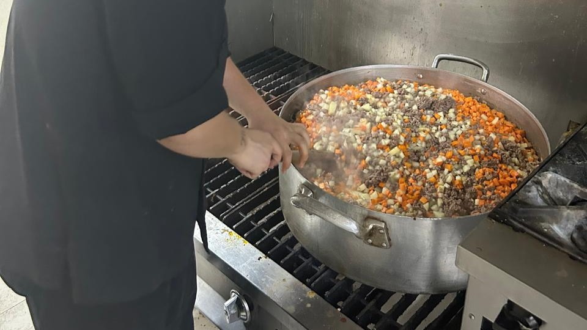

El arte culinario en casa
Me gusta cocinar mi propia comida, y de vez en cuando preparar nuevos platillos que mi familia puede probar y calificarlos con lo que más les gusta y lo que menos.
Mi pasión por la cocina
Cocinar para mí es mucho más que preparar alimentos; es una forma de expresión creativa y una manera de cuidar a las personas que amo. Cada platillo es una oportunidad de experimentar y aprender algo nuevo.
Mi proceso culinario:
1er paso: Investigar nuevas recetas y técnicas de cocción
2do paso: Experimentar con ingredientes y combinaciones de sabores
3er paso: Preparar los platillos con cuidado y atención al detalle
4to paso: Presentar la comida de manera atractiva
5to paso: Recopilar feedback honesto de mi familia
Lo que más disfruto
Me encanta ver las reacciones de mi familia cuando prueban algo nuevo que he preparado. Sus comentarios constructivos me ayudan a mejorar constantemente, y sus elogios me motivan a seguir experimentando en la cocina.
Beneficios de este pasatiempo
Además de la satisfacción personal, cocinar me ha enseñado sobre:
Nutrición • Administración del tiempo • Creatividad culinaria
Y me ha dado la independencia de preparar comidas saludables y deliciosas según mis preferencias.
Platillos nuevos este año: 12+ | Última creación:
